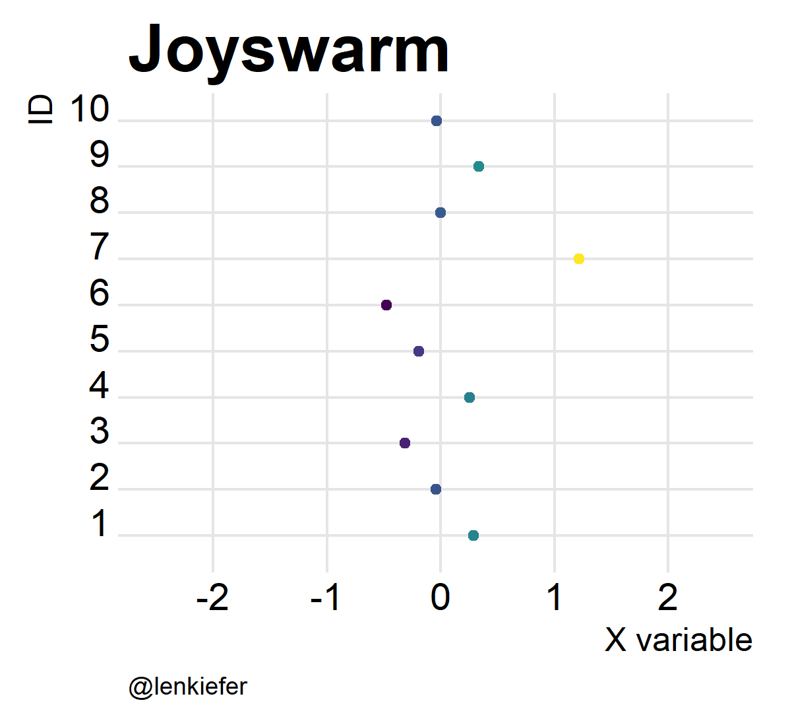

I LOOK AT A LOT OF DATA and the thing about data is it’s not always what it seems to be. A lot of data are uncertain, and based on estimates.
We’ve talked about this before. See for example, this post on visualizing uncertainty in housing data. In this post I’m going to combine one of my favorite new plot types, the joyplot (see this post) with another of my favorite plot types: the beeswarm plot (see this post for more on beeswarm plots). These plots can help us visualize uncertainty.
As usual we’ll use R to create our plots.
Setup
In this post I’m going to generate some simple random variables. I’m also going to use some purrr tricks I picked up from Jenny Bryan’s excellent purrr tutorial to help manage our simulated data.
For this example, I’m just going to simulate random variables from small number N=10 of distributions. For each of the N distributions I’m going to draw 100 pseudo random draws. Each distribution will be a normal distribution, with a different mean and variance. We’ll draw means from a standard normal distribution and standard deviation from the uniform distribution. This will give us some “Normal” looking (see what I did there?) random variables with just enough variation to be visually interesting.
First, let’s load our libraries and draw some data.
#####################################################################################
# load libraries
# we'll use this to make our data
library(tidyverse)## Loading tidyverse: ggplot2
## Loading tidyverse: tibble
## Loading tidyverse: tidyr
## Loading tidyverse: readr
## Loading tidyverse: purrr
## Loading tidyverse: dplyr## Conflicts with tidy packages ----------------------------------------------## filter(): dplyr, stats
## lag(): dplyr, statslibrary(lubridate)##
## Attaching package: 'lubridate'## The following object is masked from 'package:base':
##
## datelibrary(purrr)
# We'll use these for plotting
library(ggbeeswarm)
library(ggjoy)
library(viridis) # for the colors!## Loading required package: viridisLite#####################################################################################
#####################################################################################
# generate some random numbers
set.seed(80317)
N<-10 # number of random variables
S<-100 # sample size
# our data metadata, id # , mean, standard deviation
df<-as.tibble(list(id=1:N, # id
mean=rnorm(N), # mean
sd=runif(N))) # standard deviation
#####################################################################################
# take a peek after rounding data
htmlTable::htmlTable(df %>% map_if(is.numeric,round,3) %>% as.data.frame())| id | mean | sd | |
|---|---|---|---|
| 1 | 1 | -1.706 | 0.685 |
| 2 | 2 | -0.292 | 0.761 |
| 3 | 3 | -1.118 | 0.082 |
| 4 | 4 | 0.183 | 0.688 |
| 5 | 5 | -1.693 | 0.75 |
| 6 | 6 | 1.146 | 1 |
| 7 | 7 | -1.988 | 0.164 |
| 8 | 8 | -0.597 | 0.33 |
| 9 | 9 | -0.446 | 0.105 |
| 10 | 10 | -0.39 | 0.818 |
Now we have some metadata, but what we’d like to do is generate samples for each distribution described in the table above.
This is a purrrfect time to use purrr and its powerful map() functions. We can generate a whole bunch of data by running the bit below:
#####################################################################################
# generate samples (N x S = 10 X 100 = 1,000 obs)
df2 <- df %>%
mutate(S=S) %>%
mutate(mysamp=pmap(list(S,mean,sd),rnorm)) %>%
unnest(mysamp)
#####################################################################################
# what do we have?
str(df2)## Classes 'tbl_df', 'tbl' and 'data.frame': 1000 obs. of 5 variables:
## $ id : int 1 1 1 1 1 1 1 1 1 1 ...
## $ mean : num -1.71 -1.71 -1.71 -1.71 -1.71 ...
## $ sd : num 0.685 0.685 0.685 0.685 0.685 ...
## $ S : num 100 100 100 100 100 100 100 100 100 100 ...
## $ mysamp: num -3.495 -0.667 -1.877 -2.079 -1.212 ...In the code above I used the pmap() function with three arguments, S for sample size, mean for the population mean and sd for the population standard deviation. Before I called the unnest() function my data frame would have data frames stored in columns. Using unnest() allowed me to unpack the data. I ended up with 1000 observations, corresponding to 100 draws from 10 different distributions.
Now we’re ready for some visualization.
Joyplots
Let’s make a joyplot using gradient shading for our distributions.
ggplot(data=df2,aes(x=mysamp,
y=factor(id),
fill=..x..))+
geom_joy_gradient()+
scale_fill_viridis()+
theme_joy()+
theme(legend.position="none",plot.caption=element_text(hjust=0,size=9),
axis.title=element_text(size=12),
plot.title=element_text(size=24))+
labs(x="X variable",y="ID",caption="@lenkiefer", title="Joyplot")## Picking joint bandwidth of 0.188
A note of forcats
It might be desirable to reorder these variables by something other than id. For example, we have the true mean saved in our dataframe. We can sort the id factors using the forcats::fct_reorder() function (see forcats tidyverse page). I’ve found it useful so I’m posting this bit here (you’re welcome future Len).
ggplot(data=df2,aes(x=mysamp,
y=forcats::fct_reorder(factor(id),mean), # reorder the factor by mean
fill=..x..))+
geom_joy_gradient()+
scale_fill_viridis()+
theme_joy()+
theme(legend.position="none",plot.caption=element_text(hjust=0,size=9),
axis.title=element_text(size=12),
plot.title=element_text(size=24))+
labs(x="X variable",y="ID",caption="@lenkiefer", title="Joyplot")## Picking joint bandwidth of 0.188
Beeswarms
The joyplots are really cool, but there are other plots to show distributions. Plots like beeswarm](https://github.com/eclarke/ggbeeswarm) plots. Let’s make one using our data.
ggplot(data=df2,aes(x=mysamp,
y=factor(id),
color=mysamp))+
geom_quasirandom(alpha=0.82)+
scale_color_viridis()+
theme_joy()+
theme(legend.position="none",plot.caption=element_text(hjust=0,size=9),
axis.title=element_text(size=12),
plot.title=element_text(size=24))+
labs(x="X variable",y="ID",caption="@lenkiefer", title="Beeswarm plot")
Joyswarms
But wait. If joyplots are cool, and beeswarm plots are hot, what do we get if we put them together? Something pretty awesome I think. And it’s super easy.
ggplot(data=df2,aes(x=mysamp,
y=factor(id),
color=mysamp,
fill=..x..))+
scale_color_viridis()+
geom_joy(alpha=0.82,fill="lightgray")+
geom_quasirandom(alpha=0.82)+ # Bee sure to put point second
scale_fill_viridis()+
theme_joy()+
theme(legend.position="none",plot.caption=element_text(hjust=0,size=9),
axis.title=element_text(size=12),
plot.title=element_text(size=24))+
labs(x="X variable",y="ID",caption="@lenkiefer", title="Joyswarm plot")## Picking joint bandwidth of 0.188
Oh yeah!
And of course, they’re kind of fun to animate. Like so:

Joyswarms in the wild
These could be useful out in the wild. I’ve been experimenting with some real world data (check my Twitter feed). And in the future, maybe I’ll share some examples here.
Oh wait, nevermind. We’ll do one now.
I just saw a tweet from the St. Louis Federal Reserve on how long new homes are staying on the market.
How long has it taken for new houses to be sold? See months on market since 1975 https://t.co/BEN6kcATjQ pic.twitter.com/yVP49SxCwT
— St. Louis Fed (@stlouisfed) August 3, 2017
That’s a great candidate for a joyswarm plot. Let’s make one.
We’ll use the approach I outlined here to get the data. Let’s download the data and plot a time series.
library(quantmod)## Loading required package: xts## Loading required package: zoo##
## Attaching package: 'zoo'## The following objects are masked from 'package:base':
##
## as.Date, as.Date.numeric##
## Attaching package: 'xts'## The following objects are masked from 'package:dplyr':
##
## first, last## Loading required package: TTR## Version 0.4-0 included new data defaults. See ?getSymbols.df.fred= getSymbols('MNMFS',src='FRED', auto.assign=F) ## 'getSymbols' currently uses auto.assign=TRUE by default, but will
## use auto.assign=FALSE in 0.5-0. You will still be able to use
## 'loadSymbols' to automatically load data. getOption("getSymbols.env")
## and getOption("getSymbols.auto.assign") will still be checked for
## alternate defaults.
##
## This message is shown once per session and may be disabled by setting
## options("getSymbols.warning4.0"=FALSE). See ?getSymbols for details.df.fred = data.frame(date=time(df.fred), coredata(df.fred) )
mycaption="@lenkiefer Source: U.S. Bureau of the Census, Median Number of Months on Sales Market for Newly Completed Homes [MNMFS], retrieved from FRED, Federal Reserve Bank of St. Louis; https://fred.stlouisfed.org/series/MNMFS, August 3, 2017."
# Wrap caption 120 characters:
mycaption <- paste0(strwrap(mycaption, 80), sep="", collapse="\n")
ggplot(data=df.fred,aes(x=date,y=MNMFS))+geom_line()+
theme_minimal()+theme(plot.caption=element_text(hjust=0),
legend.position="top")+
guides(linetype=F)+
scale_color_viridis(name="Variable",discrete=T,end=0.8)+
labs(x="",
x="Months, Not Seasonally Adjusted",
title="Median Number of Months on Sales Market for Newly Completed Homes",
caption=mycaption )## Warning: The plyr::rename operation has created duplicates for the
## following name(s): (`x`)
These data are not seasonally adjusted, so you can see the pronounced seasonal variation. You can also see large volatility around the Great Recession. Let’s first create a joyplot using month on the Y axis. We’ll also add dots showing the 2017 values.
ggplot(data=df.fred,
aes(y=forcats::fct_reorder(factor(as.character(date,format="%B")),
-month(date)),
x=MNMFS, fill=..x..))+
geom_joy_gradient(rel_min_height=0.01)+
theme_joy()+
theme(plot.caption=element_text(hjust=0),
legend.position="top")+
geom_point(data=dplyr::filter(df.fred,year(date)==2017))+
scale_fill_viridis(name="Median months on market",option="C",direction=-1)+
labs(y="",
x="Months, Not Seasonally Adjusted",
title="Median Number of Months on Sales Market for Newly Completed Homes",
subtitle="Distribution Jan 1975-Jun 2017\nBlack dots=2017 values",
caption=mycaption)## Picking joint bandwidth of 0.536
Here we can see that the 2017 values are quite low by historical standards.
Let’s try a joyswarm:
ggplot(data=dplyr::filter(df.fred,month(date)<7),
aes(y=forcats::fct_reorder(factor(as.character(date,format="%B")),
-month(date)),
x=MNMFS,
color=MNMFS))+
geom_joy(rel_min_height=0.01,alpha=0.6,fill="lightgray")+
geom_quasirandom(alpha=0.8)+
theme_joy()+
theme(plot.caption=element_text(hjust=0),
legend.position="top")+
geom_point(data=dplyr::filter(df.fred,year(date)==2017),color="black",size=1.5)+
scale_color_viridis(name="Median months on market",option="C",direction=-1)+
labs(y="",
x="Months, Not Seasonally Adjusted",
title="Median Number of Months on Sales Market for Newly Completed Homes",
subtitle="Distribution Jan 1975-Jun 2017\nBlack dots=2017 values",
caption=mycaption)## Picking joint bandwidth of 0.493
It’s hard to beat good ol’ boxplots
Though I like joyplots, beeswarm plots, and joyswarm plots a lot, when it comes to clarity it’s hard to beat good ol’ boxplots (see below). However, these plots do create some visual interest and help stimulate thinking about the data.
ggplot(data=df.fred,
aes(x=forcats::fct_reorder(factor(as.character(date,format="%B")),
-month(date)),
y=MNMFS,color=MNMFS,
group=month(date)))+
theme_joy()+
coord_flip()+
theme(plot.caption=element_text(hjust=0),
legend.position="top")+
geom_boxplot(color=viridis::plasma(5)[3])+
geom_point(data=dplyr::filter(df.fred,year(date)==2017),color="black",size=1.5)+
scale_color_viridis(name="Median months on market",option="C",direction=1)+
labs(x="",y="Months, Not Seasonally Adjusted",
title="Median Number of Months on Sales Market for Newly Completed Homes",
subtitle="Distribution Jan 1975-Jun 2017\nBlack dots=2017 values",
caption=mycaption)